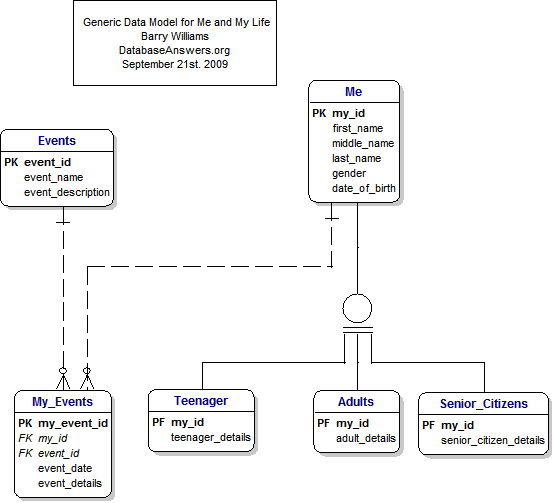

Pour le cours :
420-267 MO Développer un site Web et une application pour Internet.
Automne 2014, Collège Montmorency.
Pour les personnes de toute âges qui veulent enregistré leurs évenement marquant
ou même organiser leurs évenement futur aisément.
Pour utiliser se site :
1- Créer un compte en cliquant sur le bouton d'inscription et rempliser les information
demandées.
2- Créer vous un/des «Moi» -me(s)- en cliquant sur "New Me" et remplisez tout les
information demandées.
3- Créer vous un Evenement particulier en cliquant soit sur "New Events" ou "New My Event".
Optionelle - Créer vous un evenement du temps d'adolessent, d'adult ou de viellard en
cliquant en premier temps sur "List Mes" puis respectivement sur "New Teenager" -
"New Adult" - et "New Senior Citezen".
Diagrame de base de Donnée du départ

-cliquer pour aller a l'emplacement original d'où ce diagramme provient.-